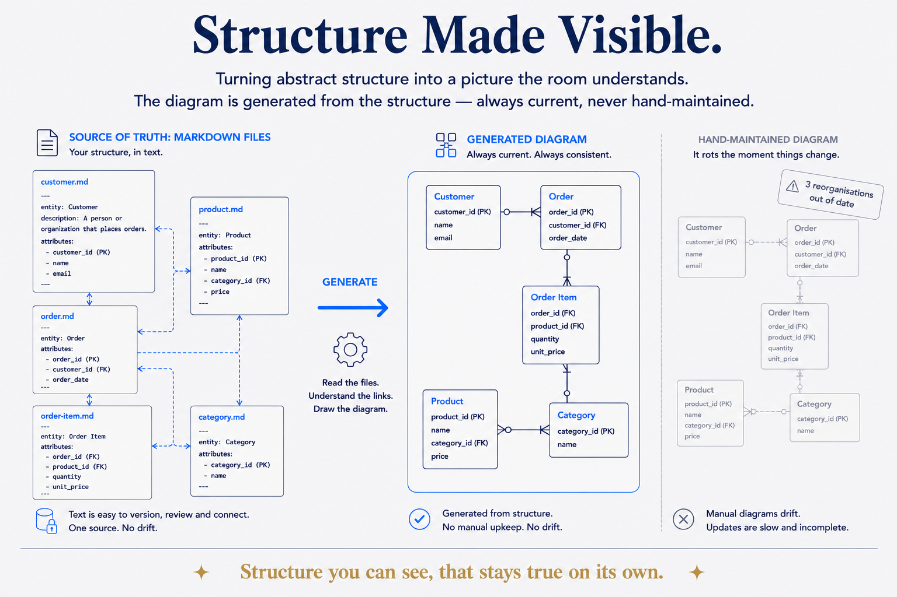

Making abstract structure and relationships literally seeable — diagrams, infographics, models — so a business audience understands complex ideas at a glance. One of Jaco's core capabilities.

Making abstract structure and relationships literally seeable — diagrams, infographics, models — so a business audience understands complex ideas at a glance. One of Jaco's core capabilities.
Most structure is invisible. A data model, a set of relationships, a layered architecture, the flow of a governance process — these are real and consequential, but they live as abstractions in a specialist's head, and the business can't act on what it can't see. Structure made visible is the capability of turning that abstraction into a picture the room actually understands: the diagram, the infographic, the one-frame model that makes a complex idea land in ten seconds instead of ten slides. It is the moment "structure beats magic" stops being a slogan and becomes obvious — because you can point at the structure.
This is a genuine differentiator, not a nice-to-have. Plenty of people can hold a complex model in their head; far fewer can render it so that a stakeholder who isn't a data architect gets it — sees the layers, the relationships, where their concern sits, why the order matters. That translation, from abstract structure to a business-legible visual, is where understanding (and buy-in, and budget) actually happens. It's the visual arm of Show the Machinery: don't just describe the system, draw it so they can walk around inside it. The wireframe-building hero on the one-pager is the idea applied to itself — a skyscraper's frame standing in for "deliberate structure holding everything up."
In practice it spans hand-crafted and generated: infographics for the essence, tooling (yEd, draw.io, Mermaid, PlantUML) for the models and relationships, and increasingly diagrams-as-code so the picture is generated from the metadata and never drifts from the truth (business-friendly diagramming is the MDDE-side technique). The discipline: the visual serves understanding, not decoration — every element earns its place (Deliberate by design), and the goal is always the same — make the complex, abstract structure seeable by the people who have to decide on it.
Related: Show the machinery · The structure pyramid · Structure beats magic · Deliberate by design · Business friendly diagramming · Architecture diagrams as code.